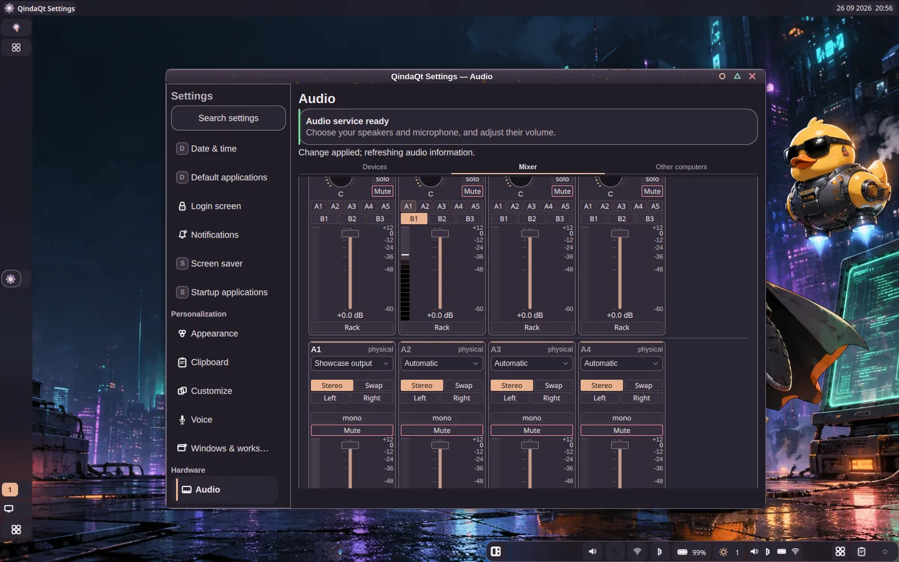

Give sources identity.
Five hardware and three virtual input strips each have a fader with dB readout, mute, solo, mono, balance pan, assignment and real peak/RMS level readings.
QindaQt / Audio1 / deep dive
Route a microphone, a game, a meeting, and a recording without treating them as one volume slider. Audio1 is a resident control and persistence layer over PipeWire. Its Settings console is a working desk for a real signal graph.
5 hardware + 3 virtual strips
A1–A5 physical + B1–B3 virtual buses
Captured in QindaQt
Watch a real test tone enter a virtual input, see its meter move, then follow an on-camera send to the B1 output bus. The tour also opens device and manual network peer controls. Cyber Pengu and Ducke guide it with character voices and illustrated gestures.
The recording runs in a private virtual display with its own PipeWire server. Its test tone never routes to a hardware speaker.
The real Settings surface
Here is Settings → Audio → Mixer running in QindaQt. The eight cards correspond to five hardware and three virtual inputs; A1–A5 and B1–B3 send controls sit on each strip. Scroll the real console for the output buses and their own controls.
Open the full capture ↗
01 / Follow one source
Choose a source below to see a representative route. This is an explanatory diagram of the console, not a live meter or remote audio controller.
Choose a QindaQt virtual sink as an app's output and give that app its own strip.
Gain, mute, solo, mono, balance pan, denoise, gate, EQ, compression, limiter.
Each strip-to-bus send has its own gain, not just an on/off switch.
A monitor bus reaches speakers; B1 is a virtual submix another app can capture.
Audio1 persists the console. The actual audio path uses PipeWire nodes and loopback sends; the matrix's gain controls each live send. The diagram omits unselected A3–A5 and B3 for clarity.
02 / Inside the console
Open Settings → Audio → Mixer for the complete console. The Audio page also has Devices and Other computers tabs; the shell audio applet offers quicker Output, Input, Apps, and Console controls.
Five hardware and three virtual input strips each have a fader with dB readout, mute, solo, mono, balance pan, assignment and real peak/RMS level readings.
Each strip can use RNNoise denoising before its gate, then a three-band EQ, compressor and limiter. Rack settings persist with the console.
Send any strip to A1–A5 or B1–B3. Every enabled cell has its own gain. Mute and solo silence the route without tearing down its graph edge.
Five physical and three virtual buses have faders, mute, mono and real peak/RMS meters. Physical buses have three-band EQ; stereo output modes include swap and left/right-to-both.
Send a clean mic and selected application sound to B1 for capture software while A1 carries what you hear. A virtual input lets a chosen application enter the mixer on its own strip.
03 / Beyond the desk
Named presets let you keep a working arrangement. File-defined macro buttons can run a list of console operations. Recording and network streams extend a mix beyond the local speakers.
Record a stereo bus to FLAC or WAV from the console, then stop it there. This is bus recording, not a multitrack timeline or file player.
Send one bus to another machine or receive a remote stream as a source with manual VBAN configuration. The current audio format is 48 kHz stereo PCM16. A saved route stays disabled until you enable it.
The panel applet and Settings use the typed Audio1 interface. The service controls and persists the graph while PipeWire carries audio and WirePlumber manages ordinary system policy.
Audio controls depend on a healthy PipeWire/WirePlumber backend. When the service cannot confirm devices or routes, the UI shows unavailable or degraded state rather than invented levels. Surround modes, a playback transport, multitrack recording, and arbitrary composite outputs are not current features. A locally active network route does not prove sound reached the other computer.
Keep exploring
Audio is one part of the customization story. Eleven shell profiles, editable panels, themes and wallpapers, tabs and splits, and native tools all live in the same desktop.
See all layouts ↗